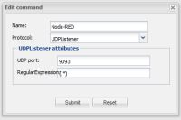
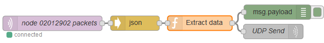

First of all apologies for this horrendous code box. I don't know how to limit that.
{kind=link}
I do have a problem to read messages sent from Node-RED. I have created a listener on port 9093 with RegEx (.*) The listener is connected with a sensor of type:custom.
The Node-RED demo code below sends this string to the OR-controller:
{"node":02012902,"count":16562,"temp":"20.75"}
Also the TCPDUMP output shows the string arrives at the OR-controller. Unfortunately if I place a label with the
Node-RED sensor on my OR screen, it displays N/A.
Any one around here who knows what can be wrong?
-----------------------------
Background
With TCPDUMP I see that the message has been send from port 9193 of a RaspberryPi to port 9093 on my DS212+ where the OR controller runs:
19:20:32.663286 IP (tos 0x0, ttl 64, id 62631, offset 0, flags DF, proto UDP (17), length 74)
raspi2.fritz.box.9193 > DS212.9093: UDP, length 46
E..J..@.@..i... ...!#.#..6..{"node":02012902,"count":16563,"temp":"20.81"}
At the same time I can send different UDP messages from an other RaspberryPi successfully to the OR-controller.
Node-RED Demo Code (If you have you can copy and paste this code to your Node-RED)
[{"id":"ad735c22.f400e","type":"mqtt-broker","z":"","broker":"croft.thethings.girovito.nl","port":"1883","clientid":"","usetls":false,"verifyservercert":true,"compatmode":true,"keepalive":"15","cleansession":true,"willTopic":"","willQos":"0","willRetain":null,"willPayload":"","birthTopic":"","birthQos":"0","birthRetain":null,"birthPayload":""},{"id":"2ab9bc05.b7c3ec","type":"function","z":"5e73aa57.dd6be4","name":"Extract data","func":"msg2 = {};\nvar b = new Buffer(msg.payload.data,'base64');\nvar c = new Buffer(msg.payload.nodeEui,'utf8');\nb = b.slice(1);\nmsg2.payload = '{\"node\":' + c + \",\" + b.toString();\nreturn msg2;","outputs":"1","noerr":0,"x":413.36114501953125,"y":100.36111640930176,"wires":[["55ae3863.33322","d5e9bf39.b1b2e8"]]},{"id":"7079d59d.e59cac","type":"json","z":"5e73aa57.dd6be4","name":"","x":280.77780532836914,"y":100.4444408416748,"wires":[["2ab9bc05.b7c3ec"]]},{"id":"6a1d2873.df04e8","type":"mqtt in","z":"5e73aa57.dd6be4","name":"node 02012902 packets","topic":"nodes/02012902/packets","broker":"ad735c22.f400e","x":112.22222900390625,"y":100.77777099609375,"wires":[["7079d59d.e59cac"]]},{"id":"55ae3863.33322","type":"debug","z":"5e73aa57.dd6be4","name":"","active":true,"console":"false","complete":"false","x":571.7777862548828,"y":77.88886642456055,"wires":[]},{"id":"d5e9bf39.b1b2e8","type":"udp out","z":"5e73aa57.dd6be4","name":"UDP Send","addr":"IP_of_Your_OR_Controller","iface":"","port":"9093","ipv":"udp4","outport":"9193","base64":false,"multicast":"false","x":563.4443969726562,"y":117.5555419921875,"wires":[]}]
The Node-RED debug output tells me with msg.payload that the following is produced:
{"node":02012902,"count":16562,"temp":"20.75"}

{kind=link}
{kind=link}